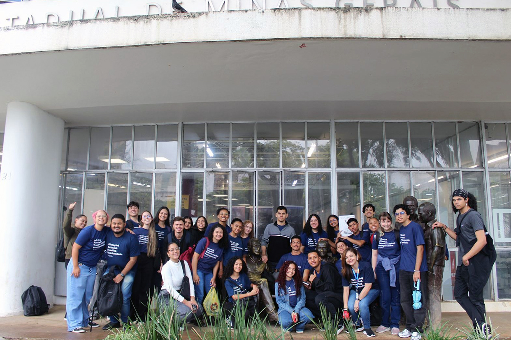
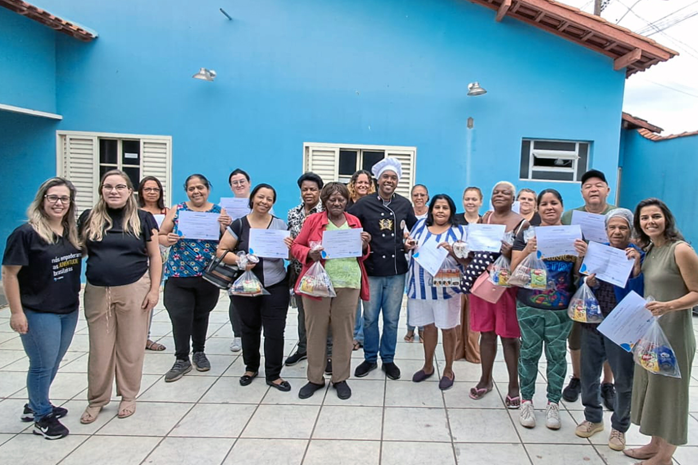
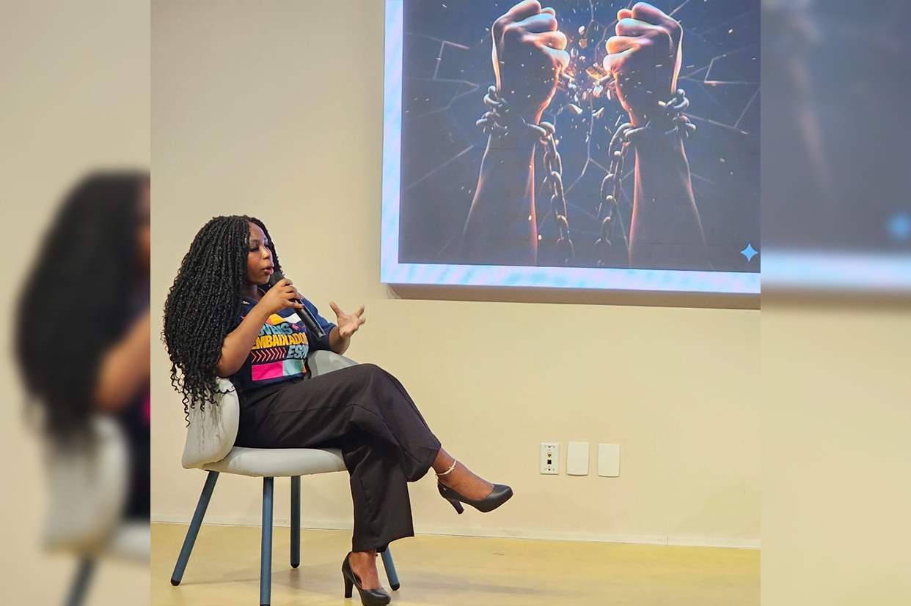
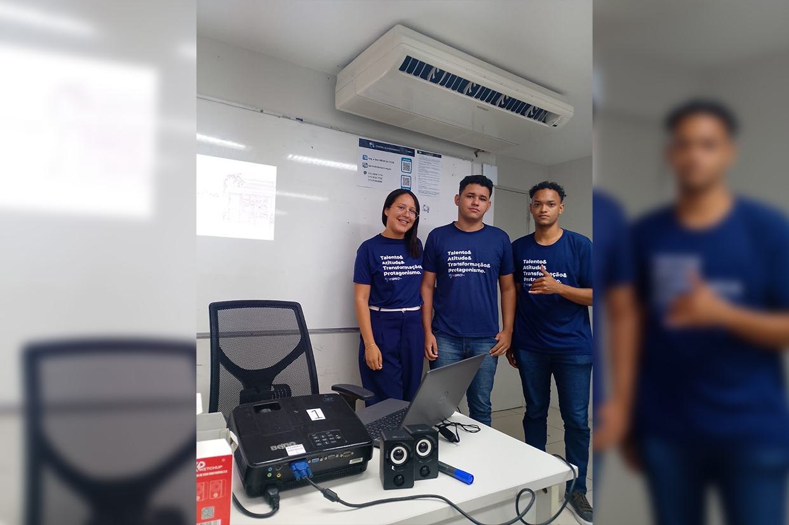
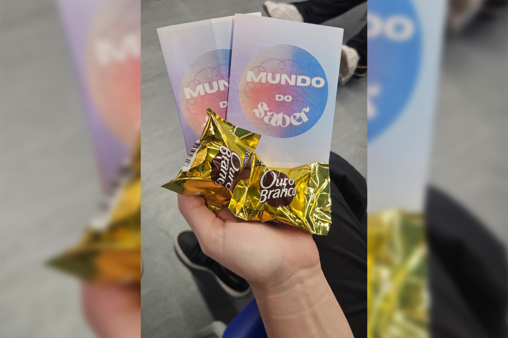
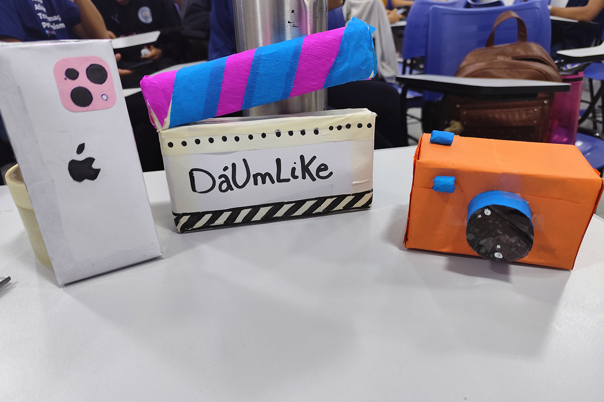
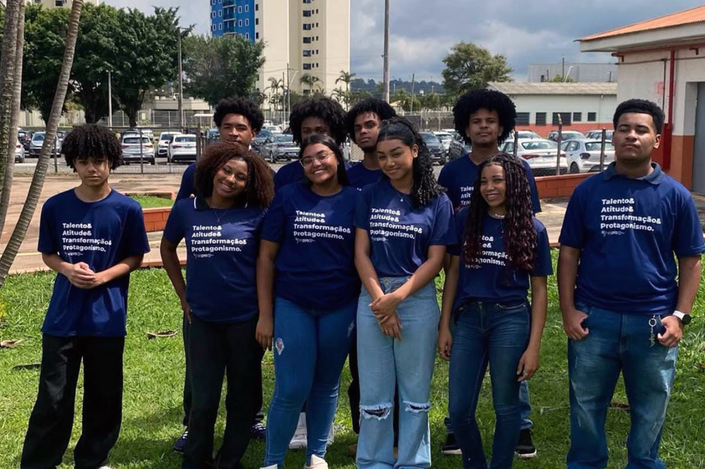

Minuto do Instrutor
Um espaço para trocas, reflexões e informações!

Visita técnica fortalece repertório cultural de jovens em Belo Horizonte
No dia 26 de fevereiro de 2026, a turma 15780, de Belo Horizonte (MG), acompanhada pela instrutora Flávia Amaral, participou de uma visita técnica à Biblioteca Pública Estadual de Minas Gerais e ao Centro Cultural Banco do Brasil Belo Horizonte, ampliando o contato dos jovens com leitura, arte e patrimônio cultural.
Na biblioteca, os participantes conheceram os diferentes espaços da instituição, seu acervo e a importância do acesso democrático à informação e ao conhecimento. Já no centro cultural, a turma explorou exposições e refletiu sobre o papel dos museus na preservação da arte, da história e da memória cultural.
A experiência reforçou o compromisso com uma formação que vai além da sala de aula, promovendo aprendizado, curiosidade e novas perspectivas culturais entre os jovens.
Confira os registros da visita técnicaOficina promove reflexão sobre violência contra a mulher e sensibiliza jovens
No dia 13 de março, a turma 16372 participou de uma oficina sobre violência contra a mulher, conduzida pelas assistentes sociais Ana Paula e Luciana, em um momento marcado por reflexão, escuta e conscientização.
Durante a atividade, os jovens compartilharam percepções e feedbacks positivos, demonstrando envolvimento com o tema e acolhimento das discussões propostas. A oficina proporcionou um espaço de diálogo sensível, reforçando a importância do respeito e da empatia nas relações. Ao final do encontro, um gesto espontâneo do jovem Guilherme Mingareli, que presenteou cada menina da turma com um chocolate, simbolizou o impacto positivo da vivência e emocionou o grupo, fortalecendo ainda mais a mensagem trabalhada durante a oficina.
Veja o momentoJovens apresentam projetos de robótica com foco em saúde e conscientização
A turma 15307, formada por jovens da área de produção, transformou a aprendizagem em uma experiência prática ao apresentar projetos desenvolvidos no curso de robótica em parceria com a Hubtech. Durante treinamentos com duração de 1h30, os participantes criaram protótipos em Arduino, demonstrando criatividade e aplicação dos conhecimentos adquiridos.
Entre os destaques, os jovens desenvolveram um projeto alinhado à missão da empresa dos gestores, voltado à saúde e qualidade de vida: um coração com pulsação acionada por sensor no dedo. A apresentação também incluiu uma campanha de conscientização sobre o Novembro Azul, reforçando o protagonismo juvenil em temas de saúde e prevenção.
Acesse os registros dos projetos
Oficina de geração de renda incentiva autonomia financeira
No dia 30 de outubro de 2025, o CRAS Sion, em Varginha (MG), recebeu a oficina “Sobremesas de Vitrine”, conduzida pela assistente social Talita Aguiar Elisei, em parceria com o Espro e a Oficina do SER, reunindo 16 moradores em uma atividade voltada à qualificação e geração de renda.
Durante a ação, os participantes conheceram técnicas de produção de sobremesas comerciais com apoio do oficineiro Thalisson Alcino, fortalecendo conhecimentos práticos para ampliação de oportunidades econômicas no território. Ao final, os participantes receberam certificado de participação, reforçando o compromisso com o desenvolvimento social e comunitário.
Confira fotos da oficina
Unidade Paulista promove educação antirracista com ação de conscientização
A unidade Paulista (SP) realizou, nos dias 14 e 28 de novembro, o evento “Vidas negras importam, estamos presentes”, iniciativa voltada ao fortalecimento da educação antirracista entre jovens e instrutores. A atividade foi conduzida por Viviane da Silva Santos, embaixadora do projeto, que apresentou a Cartilha Antirracista desenvolvida para o Projeto Embaixadores Espro 2025, ampliando reflexões sobre racismo, igualdade racial e valorização da identidade negra.
A ação destacou o protagonismo juvenil e a importância de transformar conhecimento em atitude, reforçando o papel de cada participante na construção de uma sociedade mais justa e consciente.
Acesse os registros desse encontro na íntegraGestores do Futuro em ação!

Jovens desenvolvem estratégias de marketing para fortalecer apresentação da empresa EDUCART
Na unidade de Recife (PE), a turma 015831 colocou em prática conceitos de marketing e comunicação ao desenvolver soluções para a empresa fictícia EDUCART, dentro do projeto Gestores do Futuro. A proposta teve como foco aprimorar a performance de apresentação da empresa, estimulando criatividade, organização e domínio de ferramentas visuais.
Durante a atividade, os jovens utilizaram PowerPoint, cartazes e dinâmicas de apresentação pessoal, explorando diferentes recursos para comunicar ideias com clareza e fortalecer a identidade da empresa. A experiência contribuiu para o desenvolvimento da expressão oral, do trabalho em equipe e da visão estratégica.
Confira fotos da atividade
Dinâmica de cartas fortalece vínculos e estimula desenvolvimento de soft skills
A empresa Mundo do Saber promoveu uma atividade voltada ao fortalecimento das relações interpessoais e ao desenvolvimento de competências socioemocionais por meio da Dinâmica de Cartas.
Conduzida pelo setor de Diversidade, a proposta permitiu que os participantes compartilhassem feedbacks entre si, destacando qualidades, soft skills e também pontos de aprimoramento profissional. O momento favoreceu a escuta, o acolhimento e a troca de percepções, de forma leve e construtiva.
Além de contribuir para o autoconhecimento, a dinâmica proporcionou um ambiente de tranquilidade e conexão entre todos, reforçando a importância de relações saudáveis no cotidiano profissional.
Acompanhe os registros
Atividade prática estimula criatividade e conceitos de qualidade
Na turma 15260, conduzida pela instrutora Paloma Macedo, o componente curricular de Gestão da Qualidade ganhou uma abordagem prática por meio da empresa fictícia DáumLike, em que os jovens foram desafiados a criar três produtos utilizando materiais recicláveis e de baixo custo. A proposta resultou em protótipos como câmeras, celulares e claquete, desenvolvidos com foco em criatividade, acabamento e organização.
A atividade fortaleceu conceitos de qualidade, trabalho em equipe e otimização de recursos, ao mesmo tempo em que tornou o aprendizado mais dinâmico e próximo da realidade profissional. O engajamento da turma foi evidenciado na construção e apresentação dos produtos, mostrando como teoria e prática podem caminhar juntas de forma leve e eficaz.
Confira os protótipos
Jovens promovem desfile em valorização da beleza negra
No polo de Jundiaí (SP), a turma 16060, dentro do projeto Gestores do Futuro, desenvolveu uma ação especial sobre o Novembro Negro por meio da empresa fictícia Futuro em Construção (FEC). A proposta, conduzida pelas equipes de Eventos e Social e Marketing e Comunicação, trouxe momentos de diálogo sobre consciência negra, ações antirracistas e valorização da identidade negra.
Como destaque, os jovens organizaram o desfile “Orgulho em cada tom”, realizado em 24/11, com participação de colegas da turma 16167, em uma iniciativa que celebrou a beleza natural de pessoas pretas e reforçou o protagonismo juvenil na promoção da diversidade.
Assista ao vídeo
Espro participa de fórum sobre aprendizagem e reforça impacto na formação de jovens
O Espro marcou presença no Fórum Integração Empresa: Aprendizagem – Oportunidades que transformam, realizado em Uberlândia (MG) no dia 5 de novembro de 2025, reunindo representantes de empresas, especialistas e instituições para debater os avanços da aprendizagem profissional. A entidade foi representada pelo instrutor Diener Artagnan e pela orientadora pedagógica Mônica Constantino, destacando a contribuição do programa na transformação de trajetórias juvenis.
Entre os momentos de destaque, o depoimento do ex-aprendiz Paulo Henrique evidenciou como a aprendizagem se consolida como porta de entrada para o mundo do trabalho, reforçando o compromisso institucional com formação, inclusão e desenvolvimento social.
Veja os registros desse encontroDeixe sua sugestão
E aí, curtiu o novo formato e as informações do Minuto do Instrutor? Lembre-se de compartilhar com a gente o que tá rolando em sua unidade e dê sugestões de conteúdo!
Deixe um comentário aqui 👇🏼. Sua opinião é importante para nós!